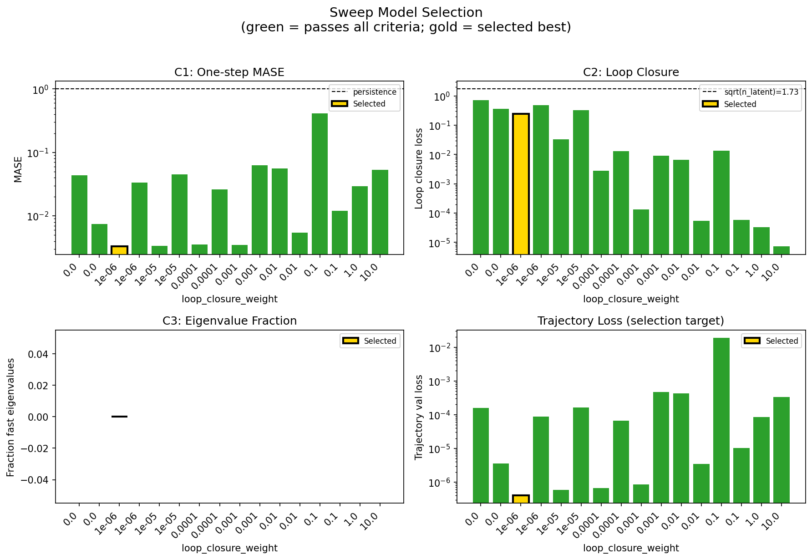
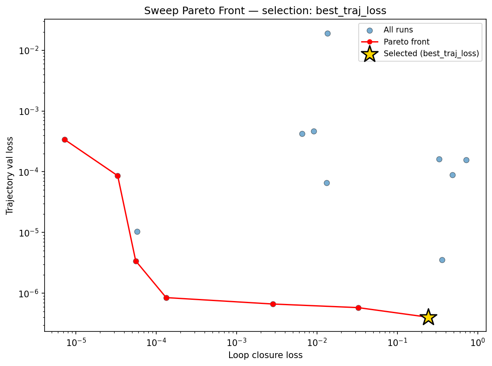
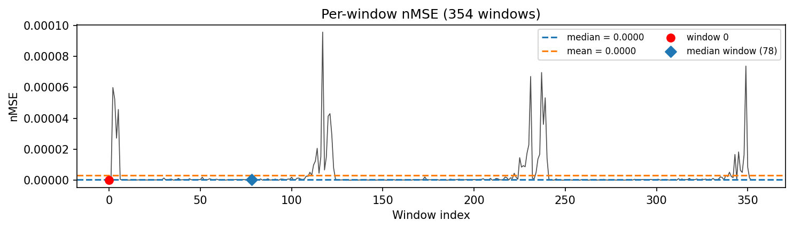
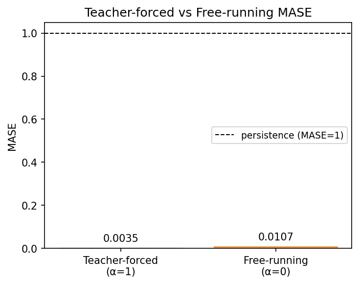
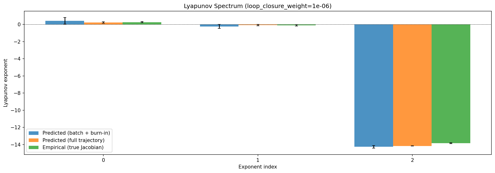
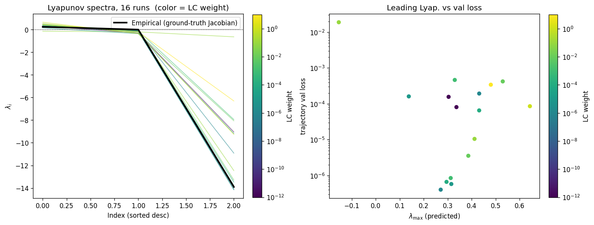
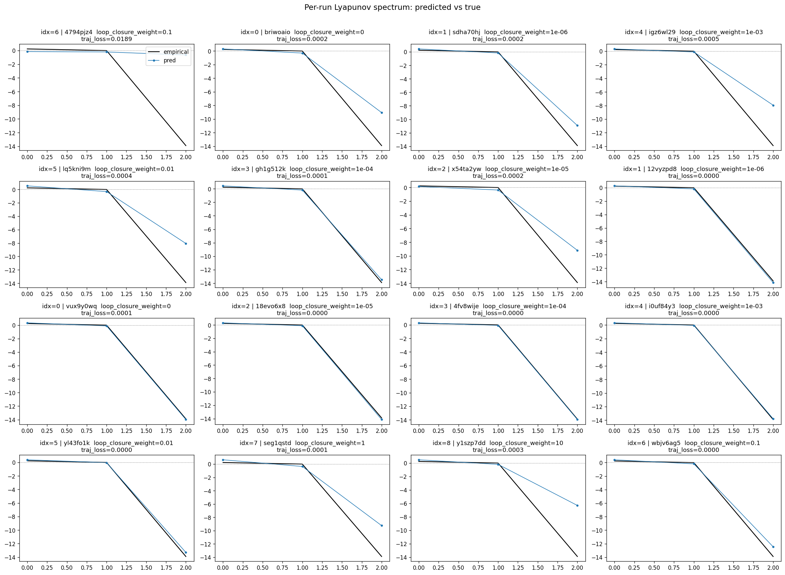
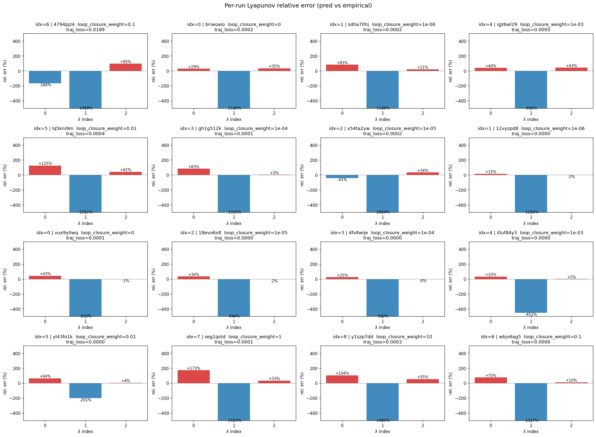
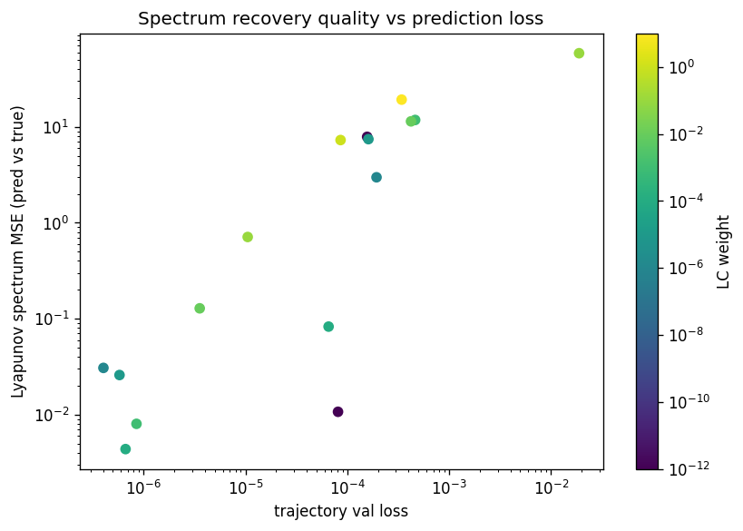

lorenz_full_additive_mse__lc_sweepProject: Lorenz_INDall_N1_D1_NormTrue_T3__JacobianODE
Launched: 2026-04-14T19:25:13Z
Completed: 2026-04-15T01:14:09Z
Outcome: complete_clean
Git: latent-JacobianODE @ 40b08d5
Expected runs: 9
lorenz_full_additive_mseDescription
Fully observed Lorenz-63 (all 3 dims, no delay embedding). Additive coupling encoder with zero_init (identity-at-init modulo permutations), trained jointly with the Jacobian dynamics using plain MSE (not gennMSE). obs_noise_scale=0 fixed; LC weight swept. Matches the clean-target LPL fix used in recent runs.
Hypothesis
On fully observed Lorenz with clean data, plain MSE and gennMSE should produce broadly similar results — the gennMSE denominator's consistency benefit is more of a per-term scaling fix that matters most when loss terms span very different subspaces (e.g. partial-obs with delay embedding). Expectation: MSE's optimal LC and Lyapunov recovery track gennMSE's closely, maybe with slightly different loss magnitudes. If they diverge significantly on this clean problem, that's diagnostic of how gennMSE is actually acting.
Success criteria
Overall best MASE: 0.0097 (LC weight = 1.0e-06, obs_noise_scale = 0.00) Overall best traj loss: 0.00000 at epoch 149.0 Runs analyzed: 16
obs_noise_scale| obs_noise_scale | Best LC weight | Best traj loss | MASE at best | R² | LC loss | epoch |
|---|---|---|---|---|---|---|
| 0.0 | 1.0e-06 | 0.00000 | 0.0097 | 1.0000 | 0.241 | 149.0 |
| Criterion | Verdict | Note |
|---|---|---|
| Best run's leading Lyapunov exponent > 0 (chaos recovered) | Unknown | |
| Best run's predicted Lyapunov spectrum within ~30% of empirical | Unknown | |
| Optimal LC weight within 1 order of magnitude of gennMSE optimum | Unknown | |
| val/trajectory_r2_score > 0.95 at the best configuration | Pass | Best R² = 1.0000; threshold > 0.95 |
Automated verdicts use simple numeric-threshold parsing and may mis-classify qualitative criteria. The Discussion section below takes precedence.









(to be written)
run_analytics stdoutrun_analyticsNo run_id provided — selecting best run from group 'lorenz_full_additive_mse__lc_sweep' ...
Found 16 total runs in JacobianODE/Lorenz_INDall_N1_D1_NormTrue_T3__JacobianODE (group=lorenz_full_additive_mse__lc_sweep)
All runs (state, loop_closure_weight, tangent_entropy_weight, kl_dyn_weight):
4794pjz4: state=finished, lc=0.1, te=0.0, kl_dyn=0.0
briwoaio: state=finished, lc=0.0, te=0.0, kl_dyn=0.0
sdha70hj: state=finished, lc=1e-06, te=0.0, kl_dyn=0.0
igz6wl29: state=finished, lc=0.001, te=0.0, kl_dyn=0.0
lq5kni9m: state=finished, lc=0.01, te=0.0, kl_dyn=0.0
gh1g512k: state=finished, lc=0.0001, te=0.0, kl_dyn=0.0
x54ta2yw: state=finished, lc=1e-05, te=0.0, kl_dyn=0.0
12vyzpd8: state=finished, lc=1e-06, te=0.0, kl_dyn=0.0
vux9y0wq: state=finished, lc=0.0, te=0.0, kl_dyn=0.0
18evo6x8: state=finished, lc=1e-05, te=0.0, kl_dyn=0.0
4fv8wije: state=finished, lc=0.0001, te=0.0, kl_dyn=0.0
i0uf84y3: state=finished, lc=0.001, te=0.0, kl_dyn=0.0
yl43fo1k: state=finished, lc=0.01, te=0.0, kl_dyn=0.0
seg1qstd: state=finished, lc=1.0, te=0.0, kl_dyn=0.0
y1szp7dd: state=finished, lc=10.0, te=0.0, kl_dyn=0.0
wbjv6ag5: state=finished, lc=0.1, te=0.0, kl_dyn=0.0
slurm_timeout_min not found in any run config — falling back to 180 min
Including 4794pjz4 (lc=0.1): use_all_runs=True (state=finished)
Including briwoaio (lc=0.0): use_all_runs=True (state=finished)
Including sdha70hj (lc=1e-06): use_all_runs=True (state=finished)
Including igz6wl29 (lc=0.001): use_all_runs=True (state=finished)
Including lq5kni9m (lc=0.01): use_all_runs=True (state=finished)
Including gh1g512k (lc=0.0001): use_all_runs=True (state=finished)
Including x54ta2yw (lc=1e-05): use_all_runs=True (state=finished)
Including 12vyzpd8 (lc=1e-06): use_all_runs=True (state=finished)
Including vux9y0wq (lc=0.0): use_all_runs=True (state=finished)
Including 18evo6x8 (lc=1e-05): use_all_runs=True (state=finished)
Including 4fv8wije (lc=0.0001): use_all_runs=True (state=finished)
Including i0uf84y3 (lc=0.001): use_all_runs=True (state=finished)
Including yl43fo1k (lc=0.01): use_all_runs=True (state=finished)
Including seg1qstd (lc=1.0): use_all_runs=True (state=finished)
Including y1szp7dd (lc=10.0): use_all_runs=True (state=finished)
Including wbjv6ag5 (lc=0.1): use_all_runs=True (state=finished)
Found 16 effectively-done sweep runs:
loop_closure_weight=0.0, tangent_entropy_weight=0.0, kl_dyn_weight=0.0 -> run_id=briwoaio
loop_closure_weight=0.0, tangent_entropy_weight=0.0, kl_dyn_weight=0.0 -> run_id=vux9y0wq
loop_closure_weight=1e-06, tangent_entropy_weight=0.0, kl_dyn_weight=0.0 -> run_id=12vyzpd8
loop_closure_weight=1e-06, tangent_entropy_weight=0.0, kl_dyn_weight=0.0 -> run_id=sdha70hj
loop_closure_weight=1e-05, tangent_entropy_weight=0.0, kl_dyn_weight=0.0 -> run_id=18evo6x8
loop_closure_weight=1e-05, tangent_entropy_weight=0.0, kl_dyn_weight=0.0 -> run_id=x54ta2yw
loop_closure_weight=0.0001, tangent_entropy_weight=0.0, kl_dyn_weight=0.0 -> run_id=4fv8wije
loop_closure_weight=0.0001, tangent_entropy_weight=0.0, kl_dyn_weight=0.0 -> run_id=gh1g512k
loop_closure_weight=0.001, tangent_entropy_weight=0.0, kl_dyn_weight=0.0 -> run_id=i0uf84y3
loop_closure_weight=0.001, tangent_entropy_weight=0.0, kl_dyn_weight=0.0 -> run_id=igz6wl29
loop_closure_weight=0.01, tangent_entropy_weight=0.0, kl_dyn_weight=0.0 -> run_id=lq5kni9m
loop_closure_weight=0.01, tangent_entropy_weight=0.0, kl_dyn_weight=0.0 -> run_id=yl43fo1k
loop_closure_weight=0.1, tangent_entropy_weight=0.0, kl_dyn_weight=0.0 -> run_id=4794pjz4
loop_closure_weight=0.1, tangent_entropy_weight=0.0, kl_dyn_weight=0.0 -> run_id=wbjv6ag5
loop_closure_weight=1.0, tangent_entropy_weight=0.0, kl_dyn_weight=0.0 -> run_id=seg1qstd
loop_closure_weight=10.0, tangent_entropy_weight=0.0, kl_dyn_weight=0.0 -> run_id=y1szp7dd
n_dims=3, n_latent=3, n_dyn=3, dt=0.0150
run=briwoaio: DiagnosticMetrics(one_step_mase=0.0433034710586071, loop_closure_loss=0.714962899684906, fast_eigenvalue_fraction=0.0, trajectory_val_loss=0.00015689674182794988) (from cache, n_batches=100)
run=vux9y0wq: DiagnosticMetrics(one_step_mase=0.007485276088118553, loop_closure_loss=0.35813894867897034, fast_eigenvalue_fraction=0.0, trajectory_val_loss=3.575584287318634e-06) (from cache, n_batches=100)
run=12vyzpd8: DiagnosticMetrics(one_step_mase=0.0032885863911360502, loop_closure_loss=0.24107687175273895, fast_eigenvalue_fraction=0.0, trajectory_val_loss=4.0336985307476425e-07) (from cache, n_batches=100)
run=sdha70hj: DiagnosticMetrics(one_step_mase=0.033488549292087555, loop_closure_loss=0.4837041199207306, fast_eigenvalue_fraction=0.0, trajectory_val_loss=8.829953731037676e-05) (from cache, n_batches=100)
run=18evo6x8: DiagnosticMetrics(one_step_mase=0.0033399811945855618, loop_closure_loss=0.03248908370733261, fast_eigenvalue_fraction=0.0, trajectory_val_loss=5.802632472295954e-07) (from cache, n_batches=100)
run=x54ta2yw: DiagnosticMetrics(one_step_mase=0.04496261849999428, loop_closure_loss=0.3294839859008789, fast_eigenvalue_fraction=0.0, trajectory_val_loss=0.00016147670976351947) (from cache, n_batches=100)
run=4fv8wije: DiagnosticMetrics(one_step_mase=0.0035616548266261816, loop_closure_loss=0.0028183385729789734, fast_eigenvalue_fraction=0.0, trajectory_val_loss=6.65205959649029e-07) (from cache, n_batches=100)
run=gh1g512k: DiagnosticMetrics(one_step_mase=0.025911808013916016, loop_closure_loss=0.013250784948468208, fast_eigenvalue_fraction=0.0, trajectory_val_loss=6.561147893080488e-05) (from cache, n_batches=100)
run=i0uf84y3: DiagnosticMetrics(one_step_mase=0.003492274321615696, loop_closure_loss=0.00013283819134812802, fast_eigenvalue_fraction=0.0, trajectory_val_loss=8.478995709992887e-07) (from cache, n_batches=100)
run=igz6wl29: DiagnosticMetrics(one_step_mase=0.06293715536594391, loop_closure_loss=0.009099569171667099, fast_eigenvalue_fraction=0.0, trajectory_val_loss=0.00046450720401480794) (from cache, n_batches=100)
run=lq5kni9m: DiagnosticMetrics(one_step_mase=0.0554855540394783, loop_closure_loss=0.006520162336528301, fast_eigenvalue_fraction=0.0, trajectory_val_loss=0.0004229488258715719) (from cache, n_batches=100)
run=yl43fo1k: DiagnosticMetrics(one_step_mase=0.005437232553958893, loop_closure_loss=5.5527696531498805e-05, fast_eigenvalue_fraction=0.0, trajectory_val_loss=3.4114518712158315e-06) (from cache, n_batches=100)
run=4794pjz4: DiagnosticMetrics(one_step_mase=0.41381359100341797, loop_closure_loss=0.013485577888786793, fast_eigenvalue_fraction=0.0, trajectory_val_loss=0.018920596688985825) (from cache, n_batches=100)
run=wbjv6ag5: DiagnosticMetrics(one_step_mase=0.011920252814888954, loop_closure_loss=5.795228207716718e-05, fast_eigenvalue_fraction=0.0, trajectory_val_loss=1.0381900210632011e-05) (from cache, n_batches=100)
run=seg1qstd: DiagnosticMetrics(one_step_mase=0.029331577941775322, loop_closure_loss=3.313846900709905e-05, fast_eigenvalue_fraction=0.0, trajectory_val_loss=8.601737499702722e-05) (from cache, n_batches=100)
run=y1szp7dd: DiagnosticMetrics(one_step_mase=0.0532628558576107, loop_closure_loss=7.279139936144929e-06, fast_eigenvalue_fraction=0.0, trajectory_val_loss=0.0003375392116140574) (from cache, n_batches=100)
Ranking method: best_traj_loss
Best run ID: 12vyzpd8
Best loop_closure_weight: 1e-06
Best tangent_entropy_weight: 0.0
Best kl_dyn_weight: 0.0
Best traj loss: 0.000000
Criteria applied: ['C1', 'C2', 'C3']
Surviving: 16 / 16
Auto-selected run_id: 12vyzpd8
======================================================================
PARETO FRONTIER RUNS (7 runs)
======================================================================
Run ID LC Loss Traj Val Loss
------------ -------------- --------------
y1szp7dd 0.000007 0.000338
seg1qstd 0.000033 0.000086
yl43fo1k 0.000056 0.000003
i0uf84y3 0.000133 0.000001
4fv8wije 0.002818 0.000001
18evo6x8 0.032489 0.000001
12vyzpd8 0.241077 0.000000 <-- selected
======================================================================
RANKING METHOD COMPARISON (over 16 survivors)
======================================================================
Method Run ID LC Loss Traj Val Loss
---------------------- ------------ -------------- --------------
best_traj_loss 12vyzpd8 0.241077 0.000000 <-- active
pareto_knee i0uf84y3 0.000133 0.000001
geo_rank 12vyzpd8 0.241077 0.000000
minimax_rank i0uf84y3 0.000133 0.000001
geo_log_score 12vyzpd8 0.241077 0.000000
minimax_log_score yl43fo1k 0.000056 0.000003
======================================================================
Loading run 12vyzpd8 from JacobianODE/Lorenz_INDall_N1_D1_NormTrue_T3__JacobianODE ...
Train dataset shape: torch.Size([25850, 25, 3])
Validation dataset shape: torch.Size([8225, 25, 3])
Test dataset shape: torch.Size([3525, 25, 3])
Train trajectories dataset shape: torch.Size([22, 1200, 3])
Validation trajectories dataset shape: torch.Size([7, 1200, 3])
Test trajectories dataset shape: torch.Size([3, 1200, 3])
Loading checkpoint epoch=149-step=30000.ckpt...
Computing MASE ...
Teacher-forced MASE: 0.0035
Free-running MASE: 0.0107
Computing Lyapunov exponents ...
Computing full-trajectory Lyapunov (3 test trajs, T=1200) ...
Predicted Lyapunov exponents (batch+burn-in, 128 windowed trajs):
λ_1 = +0.4259 ± 0.3859
λ_2 = -0.2305 ± 0.2347
λ_3 = -14.2669 ± 0.1442
Predicted Lyapunov exponents (full-length, 3 test trajs):
λ_1 = +0.2422 ± 0.0842
λ_2 = -0.0656 ± 0.0731
λ_3 = -14.1630 ± 0.0100
Empirical Lyapunov exponents (mean ± std):
λ_1 = +0.2716 ± 0.0605
λ_2 = -0.1016 ± 0.0797
λ_3 = -13.8370 ± 0.0514
Computing prediction windows ...
Windows: 354 — nMSE min=0.0000, median=0.0000, mean=0.0000, max=0.0001